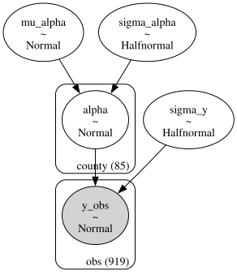

You have data from twenty groups. Some groups have hundreds of observations; others have five. You need an estimate for every group. What do you do?
Option A: ignore the groups entirely and estimate one number for everyone. Option B: estimate each group separately, pretending the others don’t exist. Both options are wrong—and the way they are wrong tells you exactly why hierarchical models exist.
This chapter builds a hierarchical model from scratch. You will see why the “just estimate each group” approach produces wild estimates for small groups, why “lump everyone together” throws away real differences, and how partial pooling threads the needle between the two. Along the way, you will learn the centered vs. non-centered parameterization trick that solves the most common convergence problem in hierarchical models, how to visualize shrinkage so you can explain partial pooling to your team, and how to extend the basic model with varying slopes when the effect of a predictor genuinely differs across groups.
By the end, you will be able to build, diagnose, and interpret hierarchical models in PyMC for any grouped data you encounter.
Imports and setup
import pymc as pmimport arviz as azimport numpy as npimport pandas as pdimport matplotlib.pyplot as pltfrom numpy.random import default_rngrng = default_rng(42)print(f"PyMC {pm.__version__}, ArviZ {az.__version__}")
PyMC 5.25.1, ArviZ 0.23.4
4.1 The Problem: Too Little or Too Much Pooling
Imagine you run a network of twenty websites. Each site gets a different volume of traffic and a different conversion rate. Your boss asks: “What is the true conversion rate for each site?”
Let’s simulate this scenario. We will generate data from twenty sites with true conversion rates drawn from a common distribution, but with wildly different sample sizes—some sites have thousands of visitors, others have only a handful.
n_sites =20true_mu =0.08# population mean conversion rate: 8%true_kappa =50# concentration: controls spread across sites# True per-site rates from a Beta distributionalpha_true = true_mu * true_kappabeta_true = (1- true_mu) * true_kappatrue_rates = rng.beta(a=alpha_true, b=beta_true, size=n_sites)# Sample sizes: some sites are big, some are tinysample_sizes = rng.choice( [10, 15, 25, 50, 100, 200, 500, 1000, 2000], size=n_sites, replace=True,)# Observed conversionsconversions = rng.binomial(n=sample_sizes, p=true_rates)site_names = [f"Site {i+1}"for i inrange(n_sites)]df = pd.DataFrame({"site": site_names,"visitors": sample_sizes,"conversions": conversions,"observed_rate": conversions / sample_sizes,"true_rate": true_rates,})df.sort_values("visitors", inplace=True, ignore_index=True)df
site
visitors
conversions
observed_rate
true_rate
0
Site 2
10
1
0.100000
0.079178
1
Site 3
10
1
0.100000
0.108658
2
Site 4
10
0
0.000000
0.087749
3
Site 10
15
1
0.066667
0.121474
4
Site 14
15
1
0.066667
0.060803
5
Site 19
15
1
0.066667
0.084346
6
Site 1
50
3
0.060000
0.077553
7
Site 20
50
4
0.080000
0.092892
8
Site 8
100
2
0.020000
0.052547
9
Site 12
100
7
0.070000
0.100002
10
Site 15
100
6
0.060000
0.059962
11
Site 17
100
5
0.050000
0.055498
12
Site 18
100
1
0.010000
0.041639
13
Site 9
500
51
0.102000
0.078882
14
Site 6
500
61
0.122000
0.132482
15
Site 5
500
48
0.096000
0.112275
16
Site 16
500
38
0.076000
0.072985
17
Site 7
500
36
0.072000
0.089750
18
Site 11
2000
103
0.051500
0.051726
19
Site 13
2000
198
0.099000
0.104237
Now let’s look at both extreme approaches.
4.1.1 Complete pooling: one estimate for all
Complete pooling ignores the group labels entirely. It computes a single conversion rate from the combined data:
This number is the same for every site. It is stable—no wild estimates for small groups—but it throws away all the real differences between sites. A site with a true 15% conversion rate gets the same estimate as one with 3%. That is not useful.
In statistics, this is called complete pooling: you pool all the data into a single bucket and estimate one parameter. It maximizes the amount of data behind the estimate, but it treats genuinely different groups as identical.
4.1.2 No pooling: separate estimates per group
No pooling treats each site independently. The estimate for each group is just its own conversions / visitors:
print("No-pooling estimates (sorted by sample size):\n")for _, row in df.iterrows():print(f" {row['site']:>8s}: "f"{row['observed_rate']:.3f} "f"(n={row['visitors']:>4d}, "f"true={row['true_rate']:.3f})" )
No-pooling estimates (sorted by sample size):
Site 2: 0.100 (n= 10, true=0.079)
Site 3: 0.100 (n= 10, true=0.109)
Site 4: 0.000 (n= 10, true=0.088)
Site 10: 0.067 (n= 15, true=0.121)
Site 14: 0.067 (n= 15, true=0.061)
Site 19: 0.067 (n= 15, true=0.084)
Site 1: 0.060 (n= 50, true=0.078)
Site 20: 0.080 (n= 50, true=0.093)
Site 8: 0.020 (n= 100, true=0.053)
Site 12: 0.070 (n= 100, true=0.100)
Site 15: 0.060 (n= 100, true=0.060)
Site 17: 0.050 (n= 100, true=0.055)
Site 18: 0.010 (n= 100, true=0.042)
Site 9: 0.102 (n= 500, true=0.079)
Site 6: 0.122 (n= 500, true=0.132)
Site 5: 0.096 (n= 500, true=0.112)
Site 16: 0.076 (n= 500, true=0.073)
Site 7: 0.072 (n= 500, true=0.090)
Site 11: 0.051 (n=2000, true=0.052)
Site 13: 0.099 (n=2000, true=0.104)
Scan the output. Sites with large sample sizes (500+) have estimates close to the truth. But small sites are all over the place—a site with 10 visitors and 0 conversions gets an estimate of 0.0%, and one with 10 visitors and 2 conversions gets 20%. These estimates are technically unbiased, but they are noisy enough to be useless for decision-making.
This is no pooling: each group is estimated in complete isolation. It respects group differences perfectly, but it uses minimal data for each estimate. When a group has five observations, you are estimating a rate from five coin flips—the variance is enormous.
The core tension is now clear. Complete pooling has low variance but high bias (it ignores real differences). No pooling has zero bias but high variance (small groups get unreliable estimates). We need a method that navigates between the two extremes, borrowing just enough information from the other groups to stabilize small estimates without flattening real differences.
Figure 4.1: Complete pooling (dashed line) ignores group differences. No pooling (dots) is noisy for small groups.
The dot sizes are proportional to sample size. Notice how the smallest dots deviate the most from the true diamonds. This is the core problem that hierarchical models solve.
4.2 Partial Pooling: The Bayesian Solution
A hierarchical model says: “These twenty sites are different, but they are not completely different. They all sell similar products, they all share a brand, and their true conversion rates probably live in some common range.”
Instead of estimating each site in isolation, the model learns the common range (the population distribution) and the individual site rates simultaneously. The result is partial pooling:
Sites with lots of data keep their own estimates, barely affected by the other sites.
Sites with little data get pulled (“shrunk”) toward the population mean, because the population mean is more informative than their noisy handful of observations.
This is not a hack or a bias—it is the mathematically optimal trade-off between using all the information you have (the group structure) and respecting what each group’s data actually says.
Think of it like this. You move to a new city and try a restaurant. The food is terrible. How much do you update your belief about all restaurants in this city? Not much, because you know that cities generally have a range of restaurants. Your single bad meal gets “shrunk” toward your prior expectation of restaurant quality. But if you eat at ten restaurants and they are all terrible, your estimate for the city stands on its own—you have enough data to overwhelm the prior.
That is exactly what a hierarchical model does, automatically, for every group at once.
The term “hierarchical” comes from the structure: parameters are organized in levels. Observations live at the bottom level. Group parameters sit in the middle. And the population distribution—the “hyperparameters”—sits on top. Information flows both up (data informs the population) and down (the population regularizes the groups). Other names for the same idea include multilevel models, mixed-effects models, and random-effects models. The concepts are identical; the names reflect different disciplinary traditions.
4.3 The Math (Light Version)
A two-level hierarchical model has three layers:
Layer 1: The population. There is a population-level mean \(\mu\) and spread \(\tau\) that describe how group parameters vary across groups. These are called hyperparameters because they sit above the group-level parameters.
Layer 2: The groups. Each group \(j\) has its own parameter \(\theta_j\), drawn from the population distribution: \[
\theta_j \sim \text{Normal}(\mu, \tau), \quad j = 1, \ldots, J
\]
Layer 3: The observations. Within each group, observations are generated from the group’s parameter: \[
y_{ij} \sim \text{Normal}(\theta_j, \sigma), \quad i = 1, \ldots, n_j
\]
The key insight is that \(\mu\) and \(\tau\) are not fixed—they are learned from the data across all groups. When the model estimates \(\theta_j\) for a small group, it borrows information from the other groups through \(\mu\) and \(\tau\). This is what makes it “hierarchical”: the parameters live at different levels of a hierarchy.
4.3.1 The shrinkage factor
How much does each group get pulled toward the population mean? The amount of shrinkage for group \(j\) is approximately: \[
\hat{\theta}_j \approx
\underbrace{\frac{n_j / \sigma^2}{n_j / \sigma^2 + 1/\tau^2}}_{\text{weight on data}} \cdot \bar{y}_j
\;+\;
\underbrace{\frac{1/\tau^2}{n_j / \sigma^2 + 1/\tau^2}}_{\text{weight on population}} \cdot \mu
\]
Read this as a weighted average between the group’s own data (\(\bar{y}_j\)) and the population mean (\(\mu\)). The weights depend on two things:
Group sample size \(n_j\). More data → more weight on the group’s own average → less shrinkage.
Population spread \(\tau\). When \(\tau\) is small (groups are genuinely similar), the population mean gets more weight. When \(\tau\) is large (groups are very different), each group’s data dominates.
This weighted average is not something you compute by hand. The MCMC sampler discovers it automatically when it fits the model. But understanding the formula helps you predict what the model will do: small groups shrink a lot; big groups barely move.
Another way to think about hierarchical models: they implement an adaptive form of regularization. In machine learning, you might add an L2 penalty to shrink all coefficients toward zero. A hierarchical model shrinks group parameters toward the group mean instead of zero, and the amount of shrinkage is learned from the data, not set by a hyperparameter grid search. Thomas Wiecki, one of PyMC’s core developers, frames it this way: “One way to view hierarchical models is as a form of regularization—you shrink everything toward the group mean, not zero.” That distinction matters. L2 regularization assumes that the “default” parameter value is zero, which is arbitrary. Hierarchical shrinkage pulls toward the empirical group mean—a much more informative anchor, especially when some groups have little data.
4.4 Building a Hierarchical Model in PyMC
The classic example for hierarchical models comes from Andrew Gelman’s radon dataset. Radon is a radioactive gas that seeps into homes from the ground; the EPA measured radon levels in homes across Minnesota, grouped by county. Some counties have many measurements; others have just one or two.
The question: what is the typical radon level in each county?
# Load the radon dataset from ArviZradon_data = az.load_arviz_data("radon")# If the built-in dataset is not available, we construct# a representative subset. The structure is what matters:# homes nested within counties, with a floor measurement.try:# Use the srrs2 data used in Gelman & Hillimport ssl ssl._create_default_https_context = ssl._create_unverified_context srrs2 = pd.read_csv("https://raw.githubusercontent.com/pymc-devs/""pymc-examples/main/examples/data/srrs2.dat" ) srrs_mn = srrs2[srrs2.state =="MN"].copy() srrs_mn["log_radon"] = np.log1p(srrs_mn.activity)# Keep counties with at least 1 observation county_counts = srrs_mn.county.value_counts() keep = county_counts.index.tolist() srrs_mn = srrs_mn[srrs_mn.county.isin(keep)].copy() srrs_mn["county_idx"] = pd.Categorical( srrs_mn.county ).codes counties = srrs_mn.county.unique() n_counties =len(counties)print(f"Loaded {len(srrs_mn)} observations "f"from {n_counties} counties" )exceptException:# Fallback: simulate radon-like data n_counties =40 counties = [f"county_{i}"for i inrange(n_counties)] county_sizes = rng.integers(1, 50, size=n_counties) county_idx = np.repeat( np.arange(n_counties), county_sizes ) true_county_means = rng.normal( loc=1.3, scale=0.4, size=n_counties ) log_radon = rng.normal( loc=true_county_means[county_idx], scale=0.7 ) srrs_mn = pd.DataFrame({"county": np.array(counties)[county_idx],"county_idx": county_idx,"log_radon": log_radon,"floor": rng.integers(0, 2, size=len(log_radon)), })print(f"Simulated {len(srrs_mn)} observations "f"from {n_counties} counties" )
Loaded 919 observations from 85 counties
Now build the hierarchical model. Every line is annotated:
county_idx = srrs_mn["county_idx"].valueslog_radon_obs = srrs_mn["log_radon"].valuescoords = {"county": counties, "obs": np.arange(len(log_radon_obs))}with pm.Model(coords=coords) as hierarchical_model:# --- Hyperpriors (population level) ---# mu_alpha: the average log-radon across ALL counties.# We give it a vague Normal prior centered on 1.4# (roughly the log of typical radon in pCi/L). mu_alpha = pm.Normal("mu_alpha", mu=1.4, sigma=1.0)# sigma_alpha: how much county means spread around# the population mean. HalfNormal forces it positive. sigma_alpha = pm.HalfNormal("sigma_alpha", sigma=1.0)# --- Group-level priors (county level) ---# Each county gets its own intercept, drawn from the# population distribution. dims="county" labels the# parameter so ArviZ plots are readable. alpha = pm.Normal("alpha", mu=mu_alpha, sigma=sigma_alpha, dims="county", )# --- Observation-level noise --- sigma_y = pm.HalfNormal("sigma_y", sigma=1.0)# --- Likelihood ---# Each home's log-radon is Normal around its county mean. y_obs = pm.Normal("y_obs", mu=alpha[county_idx], sigma=sigma_y, observed=log_radon_obs, dims="obs", )pm.model_to_graphviz(hierarchical_model)

Let’s walk through the structure:
mu_alpha and sigma_alpha are the hyperparameters. They describe the population of county means. The model learns these from the data.
alpha is a vector of county-level intercepts, one per county. Each one is drawn from Normal(mu_alpha, sigma_alpha). This is where the partial pooling happens: counties with little data get pulled toward mu_alpha.
sigma_y is the within-county noise.
y_obs is the likelihood, linking each observation to its county’s intercept.
The coords and dims arguments are not required, but they make ArviZ output much easier to read. Instead of seeing alpha[17] in a trace plot, you see alpha[Hennepin].
/Users/kundeng/Dropbox/Projects/bayeslearner-learn-pymc/.venv/lib/python3.10/site-packages/rich/live.py:260:
UserWarning: install "ipywidgets" for Jupyter support
warnings.warn('install "ipywidgets" for Jupyter support')
This looks natural, but it creates a nasty geometry for the MCMC sampler. Think about what happens when \(\sigma_\alpha\) is very small. If \(\sigma_\alpha \to 0\), then every \(\alpha_j\) must be almost exactly equal to \(\mu_\alpha\). The posterior becomes a narrow funnel: wide at the top (where \(\sigma_\alpha\) is large and the \(\alpha_j\) values spread out) and impossibly narrow at the bottom (where \(\sigma_\alpha\) is small and the \(\alpha_j\) values collapse onto \(\mu_\alpha\)).
The MCMC sampler uses a fixed step size. A step size that works in the wide part of the funnel is too big for the narrow part—the sampler overshoots and produces divergent transitions. A step size that works in the narrow part is too small for the wide part, so the sampler crawls and never converges.
Thomas Wiecki, one of PyMC’s core developers, calls this the “funnel of doom.” As he explains it: when the standard deviation approaches zero, “everything becomes very, very correlated… it’s very difficult for the parameter to move out of that or move anywhere really.”
Mathematically, this defines exactly the same distribution for \(\alpha_j\). But the sampler now explores \(\alpha_{\text{raw}}\) (which is standard normal and has no dependence on \(\sigma_\alpha\)) instead of \(\alpha\) (which is tightly coupled to \(\sigma_\alpha\)). The funnel geometry disappears.
Here is the non-centered version in PyMC:
with pm.Model(coords=coords) as nc_model:# Hyperpriors (same as before) mu_alpha = pm.Normal("mu_alpha", mu=1.4, sigma=1.0) sigma_alpha = pm.HalfNormal("sigma_alpha", sigma=1.0)# Non-centered group effects:# Step 1: draw from standard Normal alpha_raw = pm.Normal("alpha_raw", mu=0, sigma=1, dims="county", )# Step 2: shift and scale alpha = pm.Deterministic("alpha", mu_alpha + sigma_alpha * alpha_raw, dims="county", ) sigma_y = pm.HalfNormal("sigma_y", sigma=1.0) y_obs = pm.Normal("y_obs", mu=alpha[county_idx], sigma=sigma_y, observed=log_radon_obs, dims="obs", )
/Users/kundeng/Dropbox/Projects/bayeslearner-learn-pymc/.venv/lib/python3.10/site-packages/rich/live.py:260:
UserWarning: install "ipywidgets" for Jupyter support
warnings.warn('install "ipywidgets" for Jupyter support')
4.5.3 Comparing diagnostics
centered_divs = idata_hierarchical.sample_stats["diverging"].sum().valuesnc_divs = idata_nc.sample_stats["diverging"].sum().valuesprint(f"Centered model divergences: {centered_divs}")print(f"Non-centered model divergences: {nc_divs}")
Centered model divergences: 0
Non-centered model divergences: 0
Figure 4.3: Energy plots for centered (left) vs. non-centered (right). A closer match between marginal and transition energy indicates better sampling.
When to use which? Use the centered parameterization when you have lots of data per group (the sampler can estimate each group well, and the funnel doesn’t form). Use the non-centered parameterization when groups have few observations (the funnel is real and dangerous). When in doubt, start with non-centered—it is almost always safer.
Thomas Wiecki notes that in his experience, “90% of the models just seem to work fine, but once you get in more difficult territory, those 10% of cases where you start having divergences can be really difficult to deal with.” The non-centered trick handles most of those cases. But Wiecki is candid about the state of the art: “Most of the problem with Bayesian stats today is all these re-parameterization tricks.” The fact that you need to rewrite a mathematically identical model just to help the sampler is a known pain point; projects like automatic reparameterization aim to remove this burden eventually, but for now, knowing the non-centered trick is essential.
How far can these models scale? Further than you might expect. At Quantopian, Wiecki’s team built a hierarchical model with roughly 40,000 parameters to evaluate trading algorithms—and it “surprisingly worked fine with NUTS.” Modern gradient-based samplers can handle high-dimensional hierarchical structure as long as the geometry is well-conditioned (i.e., you use the non-centered parameterization where needed). Do not let the parameter count scare you.
One more piece of realism: “Real models are messier than blog posts—you only see the ones that worked,” Wiecki warns. Tutorial examples converge on the first try because they are chosen for that property. In practice, expect to iterate: check diagnostics, reparameterize, adjust priors, and refit. The workflow in Chapter 5 gives you a systematic way to do this.
4.6 Visualizing the Shrinkage
The partial pooling story becomes vivid when you plot it. Let’s compare three things for each county: (1) the no-pooling estimate (raw data average), (2) the hierarchical estimate from our model, and (3) the complete-pooling estimate.
# No-pooling: raw county averagesno_pool = srrs_mn.groupby("county_idx")["log_radon"].mean()# Hierarchical: posterior means from the non-centered modelhier_means = ( idata_nc.posterior["alpha"] .mean(dim=["chain", "draw"]) .values)# Pooled: overall meanpooled = srrs_mn["log_radon"].mean()# County sample sizescounty_n = srrs_mn.groupby("county_idx").size()
Figure 4.4: Shrinkage plot. Arrows show how each county’s estimate moves from the no-pooling value (dot) to the hierarchical estimate (arrowhead). Small counties shrink more.
Read this plot carefully:
Each arrow connects a no-pooling estimate (circle) to the corresponding hierarchical estimate (square).
Dot size is proportional to the number of observations in that county.
Small dots (few observations) produce long arrows: these counties are shrunk heavily toward the population mean.
Large dots (many observations) produce short arrows or none at all: these counties have enough data to resist the pull.
This is partial pooling in action. The hierarchical model is not blindly averaging—it is using the group structure to improve estimates for data-poor groups while leaving data-rich groups alone.
4.7 Varying Slopes and Intercepts
So far, each county has its own intercept (mean radon level) but the same relationship with any predictor. What if the effect of a predictor—say, whether the measurement was taken in the basement (floor=0) or the first floor (floor=1)—varies by county?
That is a varying-slopes (or random-slopes) model. Each county gets its own intercept and its own slope for the floor effect.
4.7.1 The model
floor_obs = srrs_mn["floor"].values.astype(float)coords_vs = {"county": counties,"obs": np.arange(len(log_radon_obs)),"effect": ["intercept", "slope"],}with pm.Model(coords=coords_vs) as varying_slopes_model:# --- Hyperpriors ---# Population means for intercept and slope mu = pm.Normal("mu", mu=0, sigma=2, dims="effect")# Population standard deviations sigma_effect = pm.HalfNormal("sigma_effect", sigma=1, dims="effect", )# Correlation between random intercept and slope.# LKJCholeskyCov handles the covariance structure# and ensures the matrix is positive definite. chol, corr, stds = pm.LKJCholeskyCov("chol", n=2, eta=2.0, # eta=2 weakly favors small correlations sd_dist=pm.HalfNormal.dist(sigma=1.0), compute_corr=True, )# --- County-level effects (non-centered) --- effects_raw = pm.Normal("effects_raw", mu=0, sigma=1, shape=(n_counties, 2), ) effects = pm.Deterministic("effects", mu + pm.math.dot(effects_raw, chol.T), )# Unpack for readability alpha_vs = effects[:, 0] # county intercepts beta_vs = effects[:, 1] # county slopes (floor effect)# --- Likelihood --- sigma_y = pm.HalfNormal("sigma_y", sigma=1.0) mu_obs = alpha_vs[county_idx] + beta_vs[county_idx] * floor_obs y_obs = pm.Normal("y_obs", mu=mu_obs, sigma=sigma_y, observed=log_radon_obs, dims="obs", )
Let me unpack the new pieces:
mu is now a 2-vector: the population-average intercept and the population-average floor slope.
LKJCholeskyCov models the correlation between each county’s intercept and slope. Maybe counties with high baseline radon also show a larger floor effect, or maybe the opposite. The LKJ prior with eta=2 says “correlations near zero are more likely than extreme ones,” which is a reasonable default when you have no strong prior belief.
effects is an (n_counties, 2) matrix. Column 0 is each county’s intercept; column 1 is each county’s floor slope. The non-centered parameterization (effects_raw times the Cholesky factor) avoids the funnel problem from Section 4.5.
/Users/kundeng/Dropbox/Projects/bayeslearner-learn-pymc/.venv/lib/python3.10/site-packages/rich/live.py:260:
UserWarning: install "ipywidgets" for Jupyter support
warnings.warn('install "ipywidgets" for Jupyter support')
When should you add random slopes? A useful heuristic from Hanna van der Vlis (who builds hierarchical crop-yield models at Apollo Agriculture): start with random intercepts only, check whether the model fits, then add random slopes if theory or residual patterns suggest the effect really does vary by group. Random slopes increase model complexity and can make sampling harder, so only add them when there is a reason.
4.8 Diagnostics for Hierarchical Models
Hierarchical models have more parameters and more ways to go wrong than flat models. Here is a diagnostic checklist.
4.8.1 1. Check for divergences
for name, idata in [ ("Centered", idata_hierarchical), ("Non-centered", idata_nc),]: divs = idata.sample_stats["diverging"].sum().valuesprint(f"{name}: {divs} divergences")
Any divergence is a warning that the sampler struggled with the posterior geometry. A few divergences (< 10 out of 8000 draws) might be tolerable, but hundreds means something is structurally wrong. Try the non-centered parameterization, increase target_accept (0.95 or 0.99), or simplify the model.
4.8.2 2. Check R-hat, especially for hyperparameters
R-hat should be below 1.01 for all parameters. Hyperparameters (mu_alpha, sigma_alpha) are especially important because every group-level estimate depends on them. If a hyperparameter has poor R-hat, none of the group estimates are trustworthy.
Figure 4.5: Trace plots for hyperparameters. Chains should mix well (look like ‘hairy caterpillars’).
4.8.4 4. Posterior predictive checks at the group level
A model can have perfect diagnostics and still be wrong. Posterior predictive checks generate fake data from the fitted model and compare it to the real data. For hierarchical models, you should check at both levels: overall and per-group.
with nc_model: idata_nc = pm.sample_posterior_predictive( idata_nc, extend_inferencedata=True, random_seed=rng, )
/Users/kundeng/Dropbox/Projects/bayeslearner-learn-pymc/.venv/lib/python3.10/site-packages/rich/live.py:260:
UserWarning: install "ipywidgets" for Jupyter support
warnings.warn('install "ipywidgets" for Jupyter support')
Figure 4.6: Posterior predictive check: simulated data (blue) vs. observed data (black). The model should generate data that looks like the real thing.
For a group-level check, pick a few counties and compare:
Figure 4.7: Posterior predictive distributions for selected counties.
If the predicted distributions consistently miss the observed data for certain groups, the model structure needs work—maybe a covariate is missing, or the likelihood family is wrong.
4.9 When to Use Hierarchical Models
Not every dataset needs a hierarchical model. Here is a quick decision guide:
Ask three questions:
Do you have groups? Observations nested within categories (counties, users, stores, schools, experiments, time periods).
Do the groups share something in common? They measure the same outcome, they come from the same population, there is reason to believe their parameters are related.
Do some groups have little data? If every group has thousands of observations, no-pooling estimates are fine and hierarchical models add complexity without much benefit.
If the answer to all three is yes, a hierarchical model is almost certainly the right choice. If every group has thousands of observations, you can often get away with no pooling—the estimates will be stable enough on their own. And if you have no group structure at all (just one flat population), a hierarchical model reduces to a regular model with no benefit.
Common use cases:
Domain
Groups
Outcome
Clinical trials
Hospitals
Treatment effect
Education
Schools
Test scores
E-commerce
Products
Conversion rate
Agriculture
Regions
Crop yield
Sports
Players
Performance metric
Finance
Trading strategies
Returns
Politics
Districts
Vote share
Wiecki describes a compelling example from psychology: a memory recognition experiment where subjects studied a list of words and were tested after varying delays. The decay in recognition accuracy over time was modeled as a hierarchical exponential. Most subjects had plenty of trials, but one subject had missing data for several delay conditions. Because the model shared information across subjects through the group-level prior, it could still infer that subject’s decay curve from the other subjects’ patterns. The group prior filled in exactly where the individual data was thin—partial pooling at work.
As Hanna van der Vlis found at Apollo Agriculture when modeling maize yields across Kenyan counties, even when you exclude the group variable, a machine learning model will often rediscover the group structure on its own—and in unpredictable ways. Her team saw regional clusters of high and low yields that changed year over year (likely driven by rainfall). A black-box model absorbed these patterns silently; a hierarchical model made the structure explicit and controllable, and—crucially—allowed the team to see which counties’ estimates were being stabilized by borrowing from the population.
Jonathan Sedar, working with car emissions data at a data science consultancy, found a similar natural hierarchy: car models sit inside brands, brands sit inside parent companies (Audi, Bentley, Porsche, and Skoda all belong to Volkswagen). Modeling the hierarchy explicitly let his team ask whether an emissions anomaly was a brand-level problem or a parent-company-level problem—the kind of question that flat models cannot answer cleanly.
When to stop at random intercepts vs. adding random slopes:
Start with random intercepts only. This is simpler, faster to fit, and often sufficient.
Add random slopes when you have theoretical reason to believe the effect of a predictor varies across groups (e.g., the floor effect on radon might genuinely differ by county because of different soil types).
If adding random slopes causes convergence problems and you do not have strong evidence that slopes vary, leave them out. The intercept-only model is not wrong—it just assumes a constant slope, which may be a fine approximation.
4.10 Exercises
Exercise 1: Conversion rates with partial pooling
Using the simulated website data from the beginning of this chapter (df), build a hierarchical Beta-Binomial model in PyMC:
/Users/kundeng/Dropbox/Projects/bayeslearner-learn-pymc/.venv/lib/python3.10/site-packages/rich/live.py:260:
UserWarning: install "ipywidgets" for Jupyter support
warnings.warn('install "ipywidgets" for Jupyter support')
Site No-pool Hier. True n
---------------------------------------------
Site 2 0.100 0.077 0.079 10
Site 3 0.100 0.077 0.109 10
Site 4 0.000 0.067 0.088 10
Site 10 0.067 0.073 0.121 15
Site 14 0.067 0.073 0.061 15
Site 19 0.067 0.073 0.084 15
Site 1 0.060 0.070 0.078 50
Site 20 0.080 0.076 0.093 50
Site 8 0.020 0.047 0.053 100
Site 12 0.070 0.072 0.100 100
Site 15 0.060 0.067 0.060 100
Site 17 0.050 0.062 0.055 100
Site 18 0.010 0.042 0.042 100
Site 9 0.102 0.097 0.079 500
Site 6 0.122 0.114 0.132 500
Site 5 0.096 0.092 0.112 500
Site 16 0.076 0.076 0.073 500
Site 7 0.072 0.073 0.090 500
Site 11 0.051 0.053 0.052 2000
Site 13 0.099 0.098 0.104 2000
Sites with the smallest sample sizes show the most shrinkage—their hierarchical estimates are pulled furthest from the no-pooling values toward the population mean.
Exercise 2: Centered vs. non-centered comparison
Fit the radon model from Section 4.4 using both parameterizations. Compare the number of divergences, the effective sample size for sigma_alpha, and the R-hat values. Which parameterization works better for this dataset?
Solution
Code
# We already fit both models above. Compare:for name, idata in [ ("Centered", idata_hierarchical), ("Non-centered", idata_nc),]: divs = idata.sample_stats["diverging"].sum().values summary = az.summary( idata, var_names=["sigma_alpha"], round_to=3, )print(f"\n{name}:")print(f" Divergences: {divs}")print(f" sigma_alpha ESS bulk: "f"{summary['ess_bulk'].values[0]:.0f}")print(f" sigma_alpha R-hat: "f"{summary['r_hat'].values[0]:.3f}")
The non-centered parameterization typically shows fewer (or zero) divergences and higher effective sample size for sigma_alpha, which is the parameter most affected by the funnel geometry.
Exercise 3: Shrinkage with sample size
Using the Beta-Binomial model from Exercise 1, create a scatter plot with sample size (\(n_j\)) on the x-axis and the absolute shrinkage (|no-pooling estimate \(-\) hierarchical estimate|) on the y-axis. You should see a decreasing relationship: more data means less shrinkage.
As expected, shrinkage drops as sample size increases. Sites with very few visitors are pulled strongly toward the population mean; sites with thousands of visitors barely move.
Exercise 4: Add a predictor to the radon model
Extend the non-centered radon model from Section 4.4 to include floor as a population-level predictor (a fixed effect, not a random slope). The model should be:
where \(\beta \sim \text{Normal}(0, 1)\) and \(\alpha_j\) is the county random intercept. Fit the model, and interpret the posterior for \(\beta\): does measuring on the first floor vs. basement change the expected radon level?
/Users/kundeng/Dropbox/Projects/bayeslearner-learn-pymc/.venv/lib/python3.10/site-packages/rich/live.py:260:
UserWarning: install "ipywidgets" for Jupyter support
warnings.warn('install "ipywidgets" for Jupyter support')
The posterior for beta_floor should be negative, indicating that first-floor measurements have lower radon than basement measurements. This makes physical sense: radon enters from the ground, so basements have higher concentrations. The hierarchical structure on the intercept accounts for county-level variation while the fixed slope captures the floor effect shared across all counties.
Source Code
# Hierarchical and Multilevel ModelsYou have data from twenty groups. Some groups have hundreds ofobservations; others have five. You need an estimate for every group.What do you do?Option A: ignore the groups entirely and estimate one number foreveryone. Option B: estimate each group separately, pretending theothers don't exist. Both options are wrong---and the way they arewrong tells you exactly why hierarchical models exist.This chapter builds a hierarchical model from scratch. You will seewhy the "just estimate each group" approach produces wild estimatesfor small groups, why "lump everyone together" throws away realdifferences, and how partial pooling threads the needle between thetwo. Along the way, you will learn the centered vs. non-centeredparameterization trick that solves the most common convergenceproblem in hierarchical models, how to visualize shrinkage so youcan explain partial pooling to your team, and how to extend thebasic model with varying slopes when the effect of a predictorgenuinely differs across groups.By the end, you will be able to build, diagnose, and interprethierarchical models in PyMC for any grouped data you encounter.```{python}#| label: setup#| code-fold: true#| code-summary: "Imports and setup"import pymc as pmimport arviz as azimport numpy as npimport pandas as pdimport matplotlib.pyplot as pltfrom numpy.random import default_rngrng = default_rng(42)print(f"PyMC {pm.__version__}, ArviZ {az.__version__}")```## The Problem: Too Little or Too Much PoolingImagine you run a network of twenty websites. Each site gets adifferent volume of traffic and a different conversion rate. Yourboss asks: "What is the true conversion rate for each site?"Let's simulate this scenario. We will generate data from twentysites with true conversion rates drawn from a common distribution,but with wildly different sample sizes---some sites have thousandsof visitors, others have only a handful.```{python}#| label: simulate-datan_sites =20true_mu =0.08# population mean conversion rate: 8%true_kappa =50# concentration: controls spread across sites# True per-site rates from a Beta distributionalpha_true = true_mu * true_kappabeta_true = (1- true_mu) * true_kappatrue_rates = rng.beta(a=alpha_true, b=beta_true, size=n_sites)# Sample sizes: some sites are big, some are tinysample_sizes = rng.choice( [10, 15, 25, 50, 100, 200, 500, 1000, 2000], size=n_sites, replace=True,)# Observed conversionsconversions = rng.binomial(n=sample_sizes, p=true_rates)site_names = [f"Site {i+1}"for i inrange(n_sites)]df = pd.DataFrame({"site": site_names,"visitors": sample_sizes,"conversions": conversions,"observed_rate": conversions / sample_sizes,"true_rate": true_rates,})df.sort_values("visitors", inplace=True, ignore_index=True)df```Now let's look at both extreme approaches.### Complete pooling: one estimate for allComplete pooling ignores the group labels entirely. It computes asingle conversion rate from the combined data:```{python}#| label: complete-poolingpooled_rate = df["conversions"].sum() / df["visitors"].sum()print(f"Pooled estimate: {pooled_rate:.4f}")```This number is the same for every site. It is stable---no wildestimates for small groups---but it throws away all the realdifferences between sites. A site with a true 15% conversion rategets the same estimate as one with 3%. That is not useful.In statistics, this is called **complete pooling**: you pool allthe data into a single bucket and estimate one parameter. Itmaximizes the amount of data behind the estimate, but it treatsgenuinely different groups as identical.### No pooling: separate estimates per groupNo pooling treats each site independently. The estimate for eachgroup is just its own `conversions / visitors`:```{python}#| label: no-poolingprint("No-pooling estimates (sorted by sample size):\n")for _, row in df.iterrows():print(f" {row['site']:>8s}: "f"{row['observed_rate']:.3f} "f"(n={row['visitors']:>4d}, "f"true={row['true_rate']:.3f})" )```Scan the output. Sites with large sample sizes (500+) have estimatesclose to the truth. But small sites are all over the place---a sitewith 10 visitors and 0 conversions gets an estimate of 0.0%, andone with 10 visitors and 2 conversions gets 20%. These estimatesare technically unbiased, but they are noisy enough to be uselessfor decision-making.This is **no pooling**: each group is estimated in completeisolation. It respects group differences perfectly, but it usesminimal data for each estimate. When a group has five observations,you are estimating a rate from five coin flips---the variance isenormous.The core tension is now clear. Complete pooling has low variancebut high bias (it ignores real differences). No pooling has zerobias but high variance (small groups get unreliable estimates). Weneed a method that navigates between the two extremes, borrowingjust enough information from the other groups to stabilize smallestimates without flattening real differences.Let's visualize both approaches:```{python}#| label: fig-pooling-extremes#| fig-cap: "Complete pooling (dashed line) ignores group differences. No pooling (dots) is noisy for small groups."fig, ax = plt.subplots(figsize=(10, 5))x = np.arange(n_sites)ax.scatter( x, df["true_rate"], marker="D", s=60, color="C2", zorder=3, label="True rate",)ax.scatter( x, df["observed_rate"], s=df["visitors"] /5, alpha=0.6, color="C0", zorder=2, label="No-pooling estimate",)ax.axhline( pooled_rate, color="C3", ls="--", lw=1.5, label=f"Pooled estimate ({pooled_rate:.3f})",)ax.set_xticks(x)ax.set_xticklabels( [f"{s}\n(n={n})"for s, n inzip(df["site"], df["visitors"])], fontsize=7, rotation=45, ha="right",)ax.set_ylabel("Conversion rate")ax.set_title("Complete pooling vs. no pooling")ax.legend(fontsize=8)fig.tight_layout()plt.show()```The dot sizes are proportional to sample size. Notice how thesmallest dots deviate the most from the true diamonds. This is thecore problem that hierarchical models solve.## Partial Pooling: The Bayesian SolutionA hierarchical model says: "These twenty sites are different, butthey are not *completely* different. They all sell similar products,they all share a brand, and their true conversion rates probablylive in some common range."Instead of estimating each site in isolation, the model learnsthe common range (the population distribution) and the individualsite rates simultaneously. The result is **partial pooling**:- Sites with **lots of data** keep their own estimates, barely affected by the other sites.- Sites with **little data** get pulled ("shrunk") toward the population mean, because the population mean is more informative than their noisy handful of observations.This is not a hack or a bias---it is the mathematically optimaltrade-off between using all the information you have (the groupstructure) and respecting what each group's data actually says.Think of it like this. You move to a new city and try a restaurant.The food is terrible. How much do you update your belief about *all*restaurants in this city? Not much, because you know that citiesgenerally have a range of restaurants. Your single bad meal gets"shrunk" toward your prior expectation of restaurant quality. Butif you eat at ten restaurants and they are all terrible, yourestimate for the city stands on its own---you have enough data tooverwhelm the prior.That is exactly what a hierarchical model does, automatically, forevery group at once.The term "hierarchical" comes from the structure: parameters areorganized in levels. Observations live at the bottom level. Groupparameters sit in the middle. And the population distribution---the"hyperparameters"---sits on top. Information flows both up (datainforms the population) and down (the population regularizes thegroups). Other names for the same idea include *multilevel models*,*mixed-effects models*, and *random-effects models*. The conceptsare identical; the names reflect different disciplinary traditions.## The Math (Light Version)A two-level hierarchical model has three layers:**Layer 1: The population.** There is a population-level mean $\mu$and spread $\tau$ that describe how group parameters vary acrossgroups. These are called *hyperparameters* because they sit abovethe group-level parameters.**Layer 2: The groups.** Each group $j$ has its own parameter$\theta_j$, drawn from the population distribution:$$\theta_j \sim \text{Normal}(\mu, \tau), \quad j = 1, \ldots, J$$**Layer 3: The observations.** Within each group, observations aregenerated from the group's parameter:$$y_{ij} \sim \text{Normal}(\theta_j, \sigma), \quad i = 1, \ldots, n_j$$The key insight is that $\mu$ and $\tau$ are not fixed---they arelearned from the data across all groups. When the model estimates$\theta_j$ for a small group, it borrows information from the othergroups through $\mu$ and $\tau$. This is what makes it "hierarchical":the parameters live at different levels of a hierarchy.### The shrinkage factorHow much does each group get pulled toward the population mean?The amount of shrinkage for group $j$ is approximately:$$\hat{\theta}_j \approx\underbrace{\frac{n_j / \sigma^2}{n_j / \sigma^2 + 1/\tau^2}}_{\text{weight on data}} \cdot \bar{y}_j\;+\;\underbrace{\frac{1/\tau^2}{n_j / \sigma^2 + 1/\tau^2}}_{\text{weight on population}} \cdot \mu$$Read this as a weighted average between the group's own data($\bar{y}_j$) and the population mean ($\mu$). The weights dependon two things:1. **Group sample size $n_j$.** More data → more weight on the group's own average → less shrinkage.2. **Population spread $\tau$.** When $\tau$ is small (groups are genuinely similar), the population mean gets more weight. When $\tau$ is large (groups are very different), each group's data dominates.This weighted average is not something you compute by hand. TheMCMC sampler discovers it automatically when it fits the model.But understanding the formula helps you predict what the modelwill do: small groups shrink a lot; big groups barely move.Another way to think about hierarchical models: they implement an*adaptive* form of regularization. In machine learning, you mightadd an L2 penalty to shrink all coefficients toward zero. Ahierarchical model shrinks group parameters toward the *group mean*instead of zero, and the amount of shrinkage is learned from thedata, not set by a hyperparameter grid search. Thomas Wiecki, oneof PyMC's core developers, frames it this way: "One way to viewhierarchical models is as a form of regularization---you shrinkeverything toward the group mean, not zero." That distinctionmatters. L2 regularization assumes that the "default" parametervalue is zero, which is arbitrary. Hierarchical shrinkage pullstoward the *empirical* group mean---a much more informativeanchor, especially when some groups have little data.## Building a Hierarchical Model in PyMC {#sec-radon}The classic example for hierarchical models comes from Andrew Gelman'sradon dataset. Radon is a radioactive gas that seeps into homes fromthe ground; the EPA measured radon levels in homes across Minnesota,grouped by county. Some counties have many measurements; others havejust one or two.The question: what is the typical radon level in each county?```{python}#| label: load-radon# Load the radon dataset from ArviZradon_data = az.load_arviz_data("radon")# If the built-in dataset is not available, we construct# a representative subset. The structure is what matters:# homes nested within counties, with a floor measurement.try:# Use the srrs2 data used in Gelman & Hillimport ssl ssl._create_default_https_context = ssl._create_unverified_context srrs2 = pd.read_csv("https://raw.githubusercontent.com/pymc-devs/""pymc-examples/main/examples/data/srrs2.dat" ) srrs_mn = srrs2[srrs2.state =="MN"].copy() srrs_mn["log_radon"] = np.log1p(srrs_mn.activity)# Keep counties with at least 1 observation county_counts = srrs_mn.county.value_counts() keep = county_counts.index.tolist() srrs_mn = srrs_mn[srrs_mn.county.isin(keep)].copy() srrs_mn["county_idx"] = pd.Categorical( srrs_mn.county ).codes counties = srrs_mn.county.unique() n_counties =len(counties)print(f"Loaded {len(srrs_mn)} observations "f"from {n_counties} counties" )exceptException:# Fallback: simulate radon-like data n_counties =40 counties = [f"county_{i}"for i inrange(n_counties)] county_sizes = rng.integers(1, 50, size=n_counties) county_idx = np.repeat( np.arange(n_counties), county_sizes ) true_county_means = rng.normal( loc=1.3, scale=0.4, size=n_counties ) log_radon = rng.normal( loc=true_county_means[county_idx], scale=0.7 ) srrs_mn = pd.DataFrame({"county": np.array(counties)[county_idx],"county_idx": county_idx,"log_radon": log_radon,"floor": rng.integers(0, 2, size=len(log_radon)), })print(f"Simulated {len(srrs_mn)} observations "f"from {n_counties} counties" )```Now build the hierarchical model. Every line is annotated:```{python}#| label: hierarchical-radoncounty_idx = srrs_mn["county_idx"].valueslog_radon_obs = srrs_mn["log_radon"].valuescoords = {"county": counties, "obs": np.arange(len(log_radon_obs))}with pm.Model(coords=coords) as hierarchical_model:# --- Hyperpriors (population level) ---# mu_alpha: the average log-radon across ALL counties.# We give it a vague Normal prior centered on 1.4# (roughly the log of typical radon in pCi/L). mu_alpha = pm.Normal("mu_alpha", mu=1.4, sigma=1.0)# sigma_alpha: how much county means spread around# the population mean. HalfNormal forces it positive. sigma_alpha = pm.HalfNormal("sigma_alpha", sigma=1.0)# --- Group-level priors (county level) ---# Each county gets its own intercept, drawn from the# population distribution. dims="county" labels the# parameter so ArviZ plots are readable. alpha = pm.Normal("alpha", mu=mu_alpha, sigma=sigma_alpha, dims="county", )# --- Observation-level noise --- sigma_y = pm.HalfNormal("sigma_y", sigma=1.0)# --- Likelihood ---# Each home's log-radon is Normal around its county mean. y_obs = pm.Normal("y_obs", mu=alpha[county_idx], sigma=sigma_y, observed=log_radon_obs, dims="obs", )pm.model_to_graphviz(hierarchical_model)```Let's walk through the structure:- **`mu_alpha`** and **`sigma_alpha`** are the *hyperparameters*. They describe the population of county means. The model learns these from the data.- **`alpha`** is a vector of county-level intercepts, one per county. Each one is drawn from `Normal(mu_alpha, sigma_alpha)`. This is where the partial pooling happens: counties with little data get pulled toward `mu_alpha`.- **`sigma_y`** is the within-county noise.- **`y_obs`** is the likelihood, linking each observation to its county's intercept.The `coords` and `dims` arguments are not required, but they makeArviZ output much easier to read. Instead of seeing `alpha[17]` ina trace plot, you see `alpha[Hennepin]`.Now sample:```{python}#| label: sample-hierarchicalwith hierarchical_model: idata_hierarchical = pm.sample( draws=2000, tune=2000, chains=4, random_seed=rng, target_accept=0.9, )``````{python}#| label: summary-hierarchicalaz.summary( idata_hierarchical, var_names=["mu_alpha", "sigma_alpha", "sigma_y"], round_to=3,)```## The Centered vs. Non-Centered Parameterization {#sec-funnel}If you have ever fit a hierarchical model and gotten warnings about**divergent transitions**, this section explains why and what todo about it.### The problem: Neal's funnelThe centered parameterization we just wrote says:$$\alpha_j \sim \text{Normal}(\mu_\alpha, \sigma_\alpha)$$This looks natural, but it creates a nasty geometry for the MCMCsampler. Think about what happens when $\sigma_\alpha$ is very small.If $\sigma_\alpha \to 0$, then every $\alpha_j$ must be almostexactly equal to $\mu_\alpha$. The posterior becomes a narrow funnel:wide at the top (where $\sigma_\alpha$ is large and the $\alpha_j$values spread out) and impossibly narrow at the bottom (where$\sigma_\alpha$ is small and the $\alpha_j$ values collapse onto$\mu_\alpha$).The MCMC sampler uses a fixed step size. A step size that works inthe wide part of the funnel is too big for the narrow part---thesampler overshoots and produces **divergent transitions**. A stepsize that works in the narrow part is too small for the wide part,so the sampler crawls and never converges.Thomas Wiecki, one of PyMC's core developers, calls this the"funnel of doom." As he explains it: when the standard deviationapproaches zero, "everything becomes very, very correlated...it's very difficult for the parameter to move out of that or moveanywhere really."Let's visualize the funnel:```{python}#| label: fig-neals-funnel#| fig-cap: "Neal's funnel. The narrow neck at small σ is where MCMC struggles."log_sigma = rng.normal(loc=0, scale=1.5, size=5000)sigma_samples = np.exp(log_sigma)x_samples = rng.normal(loc=0, scale=sigma_samples)fig, axes = plt.subplots(1, 2, figsize=(10, 4))# Funnel in (x, log_sigma) spaceaxes[0].scatter( x_samples, log_sigma, alpha=0.05, s=2, color="C0",)axes[0].set_xlabel("x (group parameter)")axes[0].set_ylabel("log σ")axes[0].set_title("Neal's funnel (log scale)")axes[0].set_xlim(-15, 15)# Funnel in (x, sigma) spaceaxes[1].scatter( x_samples, sigma_samples, alpha=0.05, s=2, color="C1",)axes[1].set_xlabel("x (group parameter)")axes[1].set_ylabel("σ")axes[1].set_title("Neal's funnel (natural scale)")axes[1].set_ylim(0, 10)axes[1].set_xlim(-15, 15)fig.tight_layout()plt.show()```### The fix: non-centered parameterizationInstead of drawing $\alpha_j$ directly from the populationdistribution, we reparameterize:$$\alpha_{\text{raw}, j} \sim \text{Normal}(0, 1)$$$$\alpha_j = \mu_\alpha + \sigma_\alpha \cdot \alpha_{\text{raw}, j}$$Mathematically, this defines exactly the same distribution for$\alpha_j$. But the sampler now explores $\alpha_{\text{raw}}$(which is standard normal and has no dependence on $\sigma_\alpha$)instead of $\alpha$ (which is tightly coupled to $\sigma_\alpha$).The funnel geometry disappears.Here is the non-centered version in PyMC:```{python}#| label: non-centered-radonwith pm.Model(coords=coords) as nc_model:# Hyperpriors (same as before) mu_alpha = pm.Normal("mu_alpha", mu=1.4, sigma=1.0) sigma_alpha = pm.HalfNormal("sigma_alpha", sigma=1.0)# Non-centered group effects:# Step 1: draw from standard Normal alpha_raw = pm.Normal("alpha_raw", mu=0, sigma=1, dims="county", )# Step 2: shift and scale alpha = pm.Deterministic("alpha", mu_alpha + sigma_alpha * alpha_raw, dims="county", ) sigma_y = pm.HalfNormal("sigma_y", sigma=1.0) y_obs = pm.Normal("y_obs", mu=alpha[county_idx], sigma=sigma_y, observed=log_radon_obs, dims="obs", )``````{python}#| label: sample-ncwith nc_model: idata_nc = pm.sample( draws=2000, tune=2000, chains=4, random_seed=rng, target_accept=0.9, )```### Comparing diagnostics```{python}#| label: compare-divergencescentered_divs = idata_hierarchical.sample_stats["diverging"].sum().valuesnc_divs = idata_nc.sample_stats["diverging"].sum().valuesprint(f"Centered model divergences: {centered_divs}")print(f"Non-centered model divergences: {nc_divs}")``````{python}#| label: fig-compare-parameterizations#| fig-cap: "Energy plots for centered (left) vs. non-centered (right). A closer match between marginal and transition energy indicates better sampling."fig, axes = plt.subplots(1, 2, figsize=(10, 4))az.plot_energy(idata_hierarchical, ax=axes[0])axes[0].set_title("Centered")az.plot_energy(idata_nc, ax=axes[1])axes[1].set_title("Non-centered")fig.tight_layout()plt.show()```**When to use which?** Use the centered parameterization when youhave lots of data per group (the sampler can estimate each groupwell, and the funnel doesn't form). Use the non-centeredparameterization when groups have few observations (the funnel isreal and dangerous). When in doubt, start with non-centered---itis almost always safer.Thomas Wiecki notes that in his experience, "90% of the models justseem to work fine, but once you get in more difficult territory,those 10% of cases where you start having divergences can be reallydifficult to deal with." The non-centered trick handles most ofthose cases. But Wiecki is candid about the state of the art:"Most of the problem with Bayesian stats today is all thesere-parameterization tricks." The fact that you need to rewrite amathematically identical model just to help the sampler is a knownpain point; projects like automatic reparameterization aim toremove this burden eventually, but for now, knowing thenon-centered trick is essential.How far can these models scale? Further than you might expect.At Quantopian, Wiecki's team built a hierarchical model withroughly 40,000 parameters to evaluate trading algorithms---andit "surprisingly worked fine with NUTS." Modern gradient-basedsamplers can handle high-dimensional hierarchical structure aslong as the geometry is well-conditioned (i.e., you use thenon-centered parameterization where needed). Do not let theparameter count scare you.One more piece of realism: "Real models are messier than blogposts---you only see the ones that worked," Wiecki warns.Tutorial examples converge on the first try because they arechosen *for* that property. In practice, expect to iterate:check diagnostics, reparameterize, adjust priors, and refit.The workflow in Chapter 5 gives you a systematic way to do this.## Visualizing the Shrinkage {#sec-shrinkage}The partial pooling story becomes vivid when you plot it. Let'scompare three things for each county: (1) the no-pooling estimate(raw data average), (2) the hierarchical estimate from our model,and (3) the complete-pooling estimate.```{python}#| label: compute-shrinkage# No-pooling: raw county averagesno_pool = srrs_mn.groupby("county_idx")["log_radon"].mean()# Hierarchical: posterior means from the non-centered modelhier_means = ( idata_nc.posterior["alpha"] .mean(dim=["chain", "draw"]) .values)# Pooled: overall meanpooled = srrs_mn["log_radon"].mean()# County sample sizescounty_n = srrs_mn.groupby("county_idx").size()``````{python}#| label: fig-shrinkage#| fig-cap: "Shrinkage plot. Arrows show how each county's estimate moves from the no-pooling value (dot) to the hierarchical estimate (arrowhead). Small counties shrink more."fig, ax = plt.subplots(figsize=(10, 6))for j inrange(min(n_counties, 50)): ax.annotate("", xy=(hier_means[j], j), xytext=(no_pool.iloc[j], j), arrowprops=dict( arrowstyle="->", color="C0", alpha=0.6, lw=1.2, ), )ax.scatter( no_pool.values[:50], np.arange(min(n_counties, 50)), s=county_n.values[:50] *3, alpha=0.5, color="C0", zorder=3, label="No pooling",)ax.scatter( hier_means[:50], np.arange(min(n_counties, 50)), s=county_n.values[:50] *3, alpha=0.7, color="C1", zorder=3, marker="s", label="Hierarchical",)ax.axvline( pooled, color="C3", ls="--", lw=1.5, label=f"Complete pooling ({pooled:.2f})",)ax.set_xlabel("Log radon level")ax.set_ylabel("County index")ax.set_title("Shrinkage: no-pooling → hierarchical estimates")ax.legend(loc="lower right", fontsize=8)fig.tight_layout()plt.show()```Read this plot carefully:- Each **arrow** connects a no-pooling estimate (circle) to the corresponding hierarchical estimate (square).- **Dot size** is proportional to the number of observations in that county.- Small dots (few observations) produce long arrows: these counties are shrunk heavily toward the population mean.- Large dots (many observations) produce short arrows or none at all: these counties have enough data to resist the pull.This is partial pooling in action. The hierarchical model is notblindly averaging---it is using the group structure to improveestimates for data-poor groups while leaving data-rich groups alone.## Varying Slopes and Intercepts {#sec-varying-slopes}So far, each county has its own intercept (mean radon level) but thesame relationship with any predictor. What if the effect of apredictor---say, whether the measurement was taken in the basement(`floor=0`) or the first floor (`floor=1`)---varies by county?That is a **varying-slopes** (or **random-slopes**) model. Eachcounty gets its own intercept *and* its own slope for the flooreffect.### The model```{python}#| label: varying-slopesfloor_obs = srrs_mn["floor"].values.astype(float)coords_vs = {"county": counties,"obs": np.arange(len(log_radon_obs)),"effect": ["intercept", "slope"],}with pm.Model(coords=coords_vs) as varying_slopes_model:# --- Hyperpriors ---# Population means for intercept and slope mu = pm.Normal("mu", mu=0, sigma=2, dims="effect")# Population standard deviations sigma_effect = pm.HalfNormal("sigma_effect", sigma=1, dims="effect", )# Correlation between random intercept and slope.# LKJCholeskyCov handles the covariance structure# and ensures the matrix is positive definite. chol, corr, stds = pm.LKJCholeskyCov("chol", n=2, eta=2.0, # eta=2 weakly favors small correlations sd_dist=pm.HalfNormal.dist(sigma=1.0), compute_corr=True, )# --- County-level effects (non-centered) --- effects_raw = pm.Normal("effects_raw", mu=0, sigma=1, shape=(n_counties, 2), ) effects = pm.Deterministic("effects", mu + pm.math.dot(effects_raw, chol.T), )# Unpack for readability alpha_vs = effects[:, 0] # county intercepts beta_vs = effects[:, 1] # county slopes (floor effect)# --- Likelihood --- sigma_y = pm.HalfNormal("sigma_y", sigma=1.0) mu_obs = alpha_vs[county_idx] + beta_vs[county_idx] * floor_obs y_obs = pm.Normal("y_obs", mu=mu_obs, sigma=sigma_y, observed=log_radon_obs, dims="obs", )```Let me unpack the new pieces:- **`mu`** is now a 2-vector: the population-average intercept and the population-average floor slope.- **`LKJCholeskyCov`** models the correlation between each county's intercept and slope. Maybe counties with high baseline radon also show a larger floor effect, or maybe the opposite. The LKJ prior with `eta=2` says "correlations near zero are more likely than extreme ones," which is a reasonable default when you have no strong prior belief.- **`effects`** is an `(n_counties, 2)` matrix. Column 0 is each county's intercept; column 1 is each county's floor slope. The non-centered parameterization (`effects_raw` times the Cholesky factor) avoids the funnel problem from @sec-funnel.```{python}#| label: sample-varying-slopeswith varying_slopes_model: idata_vs = pm.sample( draws=2000, tune=2000, chains=4, random_seed=rng, target_accept=0.95, )```**When should you add random slopes?** A useful heuristic fromHanna van der Vlis (who builds hierarchical crop-yield models atApollo Agriculture): start with random intercepts only, checkwhether the model fits, then add random slopes if theory orresidual patterns suggest the effect really does vary by group.Random slopes increase model complexity and can make samplingharder, so only add them when there is a reason.## Diagnostics for Hierarchical Models {#sec-diagnostics}Hierarchical models have more parameters and more ways to go wrongthan flat models. Here is a diagnostic checklist.### 1. Check for divergences```{python}#| label: divergences-checkfor name, idata in [ ("Centered", idata_hierarchical), ("Non-centered", idata_nc),]: divs = idata.sample_stats["diverging"].sum().valuesprint(f"{name}: {divs} divergences")```Any divergence is a warning that the sampler struggled with theposterior geometry. A few divergences (< 10 out of 8000 draws) mightbe tolerable, but hundreds means something is structurally wrong.Try the non-centered parameterization, increase `target_accept`(0.95 or 0.99), or simplify the model.### 2. Check R-hat, especially for hyperparameters```{python}#| label: rhat-checksummary = az.summary( idata_nc, var_names=["mu_alpha", "sigma_alpha", "sigma_y"], round_to=3,)print(summary[["r_hat", "ess_bulk", "ess_tail"]])```R-hat should be below 1.01 for all parameters. Hyperparameters(`mu_alpha`, `sigma_alpha`) are especially important because everygroup-level estimate depends on them. If a hyperparameter has poorR-hat, none of the group estimates are trustworthy.### 3. Trace plots for hyperparameters```{python}#| label: fig-trace-hyper#| fig-cap: "Trace plots for hyperparameters. Chains should mix well (look like 'hairy caterpillars')."az.plot_trace( idata_nc, var_names=["mu_alpha", "sigma_alpha", "sigma_y"], figsize=(10, 6),)plt.tight_layout()plt.show()```### 4. Posterior predictive checks at the group levelA model can have perfect diagnostics and still be wrong. Posteriorpredictive checks generate fake data from the fitted model andcompare it to the real data. For hierarchical models, you shouldcheck at both levels: overall and per-group.```{python}#| label: ppc-hierarchicalwith nc_model: idata_nc = pm.sample_posterior_predictive( idata_nc, extend_inferencedata=True, random_seed=rng, )``````{python}#| label: fig-ppc-overall#| fig-cap: "Posterior predictive check: simulated data (blue) vs. observed data (black). The model should generate data that looks like the real thing."az.plot_ppc( idata_nc, num_pp_samples=100, figsize=(8, 4),)plt.title("Posterior predictive check (overall)")plt.tight_layout()plt.show()```For a group-level check, pick a few counties and compare:```{python}#| label: fig-ppc-counties#| fig-cap: "Posterior predictive distributions for selected counties."# Pick a few counties with different sample sizescounty_n_sorted = county_n.sort_values()small_county = county_n_sorted.index[0]medium_county = county_n_sorted.index[len(county_n_sorted) //2]large_county = county_n_sorted.index[-1]fig, axes = plt.subplots(1, 3, figsize=(12, 3.5))for ax, cidx, label inzip( axes, [small_county, medium_county, large_county], ["Small county", "Medium county", "Large county"],): mask = srrs_mn["county_idx"].values == cidx obs_data = log_radon_obs[mask] pp_data = ( idata_nc.posterior_predictive["y_obs"] .isel(obs=np.where(mask)[0]) .values.flatten() ) ax.hist( pp_data, bins=40, density=True, alpha=0.4, color="C0", label="Predicted", ) ax.axvline( obs_data.mean(), color="k", lw=2, label=f"Observed mean", )for v in obs_data: ax.axvline(v, color="C3", alpha=0.3, lw=0.5) ax.set_title(f"{label} (n={mask.sum()})", fontsize=10, ) ax.legend(fontsize=7)fig.suptitle("Group-level posterior predictive checks")fig.tight_layout()plt.show()```If the predicted distributions consistently miss the observed datafor certain groups, the model structure needs work---maybe acovariate is missing, or the likelihood family is wrong.## When to Use Hierarchical ModelsNot every dataset needs a hierarchical model. Here is a quickdecision guide:**Ask three questions:**1. **Do you have groups?** Observations nested within categories (counties, users, stores, schools, experiments, time periods).2. **Do the groups share something in common?** They measure the same outcome, they come from the same population, there is reason to believe their parameters are related.3. **Do some groups have little data?** If every group has thousands of observations, no-pooling estimates are fine and hierarchical models add complexity without much benefit.If the answer to all three is yes, a hierarchical model is almostcertainly the right choice. If every group has thousands ofobservations, you can often get away with no pooling---the estimateswill be stable enough on their own. And if you have no groupstructure at all (just one flat population), a hierarchical modelreduces to a regular model with no benefit.**Common use cases:**| Domain | Groups | Outcome ||--------|--------|---------|| Clinical trials | Hospitals | Treatment effect || Education | Schools | Test scores || E-commerce | Products | Conversion rate || Agriculture | Regions | Crop yield || Sports | Players | Performance metric || Finance | Trading strategies | Returns || Politics | Districts | Vote share |Wiecki describes a compelling example from psychology: a memoryrecognition experiment where subjects studied a list of words andwere tested after varying delays. The decay in recognitionaccuracy over time was modeled as a hierarchical exponential.Most subjects had plenty of trials, but one subject had missingdata for several delay conditions. Because the model sharedinformation across subjects through the group-level prior, itcould still infer that subject's decay curve from the othersubjects' patterns. The group prior filled in exactly where theindividual data was thin---partial pooling at work.As Hanna van der Vlis found at Apollo Agriculture when modelingmaize yields across Kenyan counties, even when you exclude thegroup variable, a machine learning model will often rediscover thegroup structure on its own---and in unpredictable ways. Her teamsaw regional clusters of high and low yields that changed year overyear (likely driven by rainfall). A black-box model absorbed thesepatterns silently; a hierarchical model made the structure explicitand controllable, and---crucially---allowed the team to see whichcounties' estimates were being stabilized by borrowing from thepopulation.Jonathan Sedar, working with car emissions data at a data scienceconsultancy, found a similar natural hierarchy: car models sitinside brands, brands sit inside parent companies (Audi, Bentley,Porsche, and Skoda all belong to Volkswagen). Modeling thehierarchy explicitly let his team ask whether an emissions anomalywas a brand-level problem or a parent-company-level problem---thekind of question that flat models cannot answer cleanly.**When to stop at random intercepts vs. adding random slopes:**- Start with **random intercepts only**. This is simpler, faster to fit, and often sufficient.- Add **random slopes** when you have theoretical reason to believe the effect of a predictor varies across groups (e.g., the floor effect on radon might genuinely differ by county because of different soil types).- If adding random slopes causes convergence problems and you do not have strong evidence that slopes vary, leave them out. The intercept-only model is not wrong---it just assumes a constant slope, which may be a fine approximation.## Exercises**Exercise 1: Conversion rates with partial pooling**Using the simulated website data from the beginning of this chapter(`df`), build a hierarchical Beta-Binomial model in PyMC:- Hyperpriors: $\mu \sim \text{Beta}(2, 20)$, $\kappa \sim \text{HalfNormal}(100)$- Group rates: $\theta_j \sim \text{Beta}(\mu \cdot \kappa, (1-\mu) \cdot \kappa)$- Likelihood: $y_j \sim \text{Binomial}(n_j, \theta_j)$Compare the posterior means for each site to the no-poolingestimates and the true rates. Which sites show the most shrinkage?::: {.callout-tip collapse="true"}## Solution```{python}#| label: ex1-solution#| code-fold: truecoords_ex = {"site": df["site"].values}with pm.Model(coords=coords_ex) as beta_binom_model: mu = pm.Beta("mu", alpha=2, beta=20) kappa = pm.HalfNormal("kappa", sigma=100) theta = pm.Beta("theta", alpha=mu * kappa, beta=(1- mu) * kappa, dims="site", ) y = pm.Binomial("y", n=df["visitors"].values, p=theta, observed=df["conversions"].values, dims="site", ) idata_ex1 = pm.sample( draws=2000, tune=2000, chains=4, random_seed=rng, )post_means = ( idata_ex1.posterior["theta"] .mean(dim=["chain", "draw"]) .values)print(f"{'Site':>8s}{'No-pool':>8s} "f"{'Hier.':>8s}{'True':>8s}{'n':>5s}")print("-"*45)for i, row in df.iterrows():print(f"{row['site']:>8s} "f"{row['observed_rate']:8.3f} "f"{post_means[i]:8.3f} "f"{row['true_rate']:8.3f} "f"{row['visitors']:5d}" )```Sites with the smallest sample sizes show the most shrinkage---theirhierarchical estimates are pulled furthest from the no-poolingvalues toward the population mean.:::**Exercise 2: Centered vs. non-centered comparison**Fit the radon model from @sec-radon using both parameterizations.Compare the number of divergences, the effective sample size for`sigma_alpha`, and the R-hat values. Which parameterization worksbetter for this dataset?::: {.callout-tip collapse="true"}## Solution```{python}#| label: ex2-solution#| code-fold: true# We already fit both models above. Compare:for name, idata in [ ("Centered", idata_hierarchical), ("Non-centered", idata_nc),]: divs = idata.sample_stats["diverging"].sum().values summary = az.summary( idata, var_names=["sigma_alpha"], round_to=3, )print(f"\n{name}:")print(f" Divergences: {divs}")print(f" sigma_alpha ESS bulk: "f"{summary['ess_bulk'].values[0]:.0f}")print(f" sigma_alpha R-hat: "f"{summary['r_hat'].values[0]:.3f}")```The non-centered parameterization typically shows fewer (or zero)divergences and higher effective sample size for `sigma_alpha`,which is the parameter most affected by the funnel geometry.:::**Exercise 3: Shrinkage with sample size**Using the Beta-Binomial model from Exercise 1, create a scatterplot with sample size ($n_j$) on the x-axis and the absoluteshrinkage (|no-pooling estimate $-$ hierarchical estimate|) on they-axis. You should see a decreasing relationship: more data meansless shrinkage.::: {.callout-tip collapse="true"}## Solution```{python}#| label: ex3-solution#| code-fold: trueshrinkage = np.abs( df["observed_rate"].values - post_means)fig, ax = plt.subplots(figsize=(7, 4))ax.scatter( df["visitors"], shrinkage, s=60, alpha=0.7, color="C0",)ax.set_xlabel("Sample size (visitors)")ax.set_ylabel("|No-pooling − Hierarchical|")ax.set_title("Shrinkage decreases with sample size")ax.set_xscale("log")fig.tight_layout()plt.show()```As expected, shrinkage drops as sample size increases. Sites withvery few visitors are pulled strongly toward the population mean;sites with thousands of visitors barely move.:::**Exercise 4: Add a predictor to the radon model**Extend the non-centered radon model from @sec-radon to include`floor` as a population-level predictor (a fixed effect, not arandom slope). The model should be:$$\mu_i = \alpha_{j[i]} + \beta \cdot \text{floor}_i$$where $\beta \sim \text{Normal}(0, 1)$ and $\alpha_j$ is thecounty random intercept. Fit the model, and interpret the posteriorfor $\beta$: does measuring on the first floor vs. basement changethe expected radon level?::: {.callout-tip collapse="true"}## Solution```{python}#| label: ex4-solution#| code-fold: truefloor_obs = srrs_mn["floor"].values.astype(float)with pm.Model(coords=coords) as radon_floor_model: mu_alpha = pm.Normal("mu_alpha", mu=1.4, sigma=1.0) sigma_alpha = pm.HalfNormal("sigma_alpha", sigma=1.0) alpha_raw = pm.Normal("alpha_raw", mu=0, sigma=1, dims="county", ) alpha = pm.Deterministic("alpha", mu_alpha + sigma_alpha * alpha_raw, dims="county", )# Fixed floor effect beta_floor = pm.Normal("beta_floor", mu=0, sigma=1) sigma_y = pm.HalfNormal("sigma_y", sigma=1.0) mu_obs = alpha[county_idx] + beta_floor * floor_obs y_obs = pm.Normal("y_obs", mu=mu_obs, sigma=sigma_y, observed=log_radon_obs, dims="obs", ) idata_floor = pm.sample( draws=2000, tune=2000, chains=4, random_seed=rng, target_accept=0.9, )az.plot_posterior( idata_floor, var_names=["beta_floor"], ref_val=0, figsize=(6, 3),)plt.title("Floor effect on log-radon")plt.tight_layout()plt.show()beta_summary = az.summary( idata_floor, var_names=["beta_floor"], hdi_prob=0.94, round_to=3,)print(beta_summary)```The posterior for `beta_floor` should be negative, indicating thatfirst-floor measurements have lower radon than basementmeasurements. This makes physical sense: radon enters from theground, so basements have higher concentrations. The hierarchicalstructure on the intercept accounts for county-level variationwhile the fixed slope captures the floor effect shared across allcounties.:::